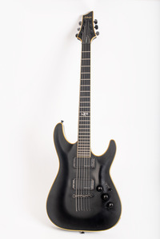
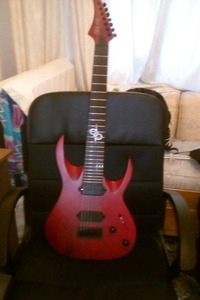
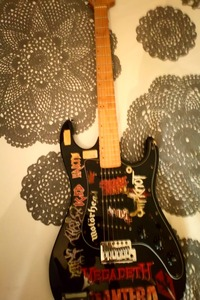
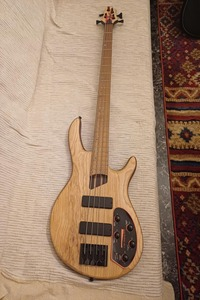
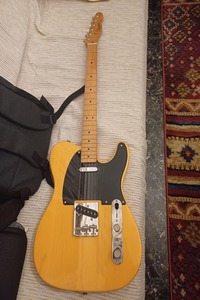
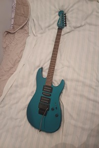
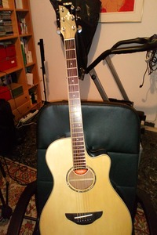
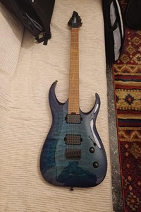

Hello, everyone! My name is Kostas. Welcome to a demo site about my guitar collection. I have been playing guitar for over 15 years now, since September 2009. Essentially, more than half my life, given that I'm years old, already! What about you? Do you play guitar, too?
Choose how guitar images are displayed: upright or rotated 90 degrees.







